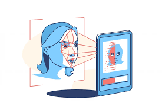
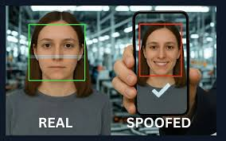

Sistem Absensi & AI
Absensi wajah instan, pantau progress secara real-time, dan diskusikan segala kendala akademik bersama Asisten AI khusus Anda.
Masuk sebagai MahasiswaOtoritas Akademik
Akses penuh kendali ke rekap kehadiran kelas dan sistem pelaporan performa setiap mahasiswa di bawah bimbingan Anda.
Masuk sebagai DosenInfrastruktur cerdas yang dirancang untuk mempercepat otomatisasi kampus, disusun dalam enam pilar utama.

Absensi biometrik real-time. Memindai titik geometris wajah untuk akurasi pencatatan kehadiran instan tanpa kontak fisik.
Pelajari di Wikipedia
Sistem anti-spoofing otomatis yang mendeteksi indikator kehidupan spasial 3D untuk mencegah kecurangan foto/layar.
Pelajari di WikipediaAsisten cerdas Large Language Model yang dilatih khusus dengan konteks dan dokumen institusi akademik Anda.
Pelajari di WikipediaDashboard eksekutif yang menyajikan pemodelan prediktif atas performa data mahasiswa, IPK, dan probabilitas akademik.
Pelajari di WikipediaInfrastruktur pemisahan kendali akses berbasis JWT, membedakan otorisasi Mahasiswa, Dosen, hingga SuperAdmin.
Pelajari di WikipediaValidasi presisi geolokasi berlapis memastikan absensi hanya sah apabila dilakukan tepat dalam kawasan kampus.
Pelajari di WikipediaLupakan antrian memindai barcode. Sistem kami memetakan topologi wajah Anda hanya dalam 2 detik. Dibangun di atas model machine learning terkini dengan akurasi pengenalan mencapai 99.8% pada kondisi pencahayaan rendah.
Tidak ada panduan pengguna yang rumit. Tanyakan apapun secara langsung. AI RAG mandiri kami memprosesnya secara privat tanpa menyentuh server eksternal, memberikan jawaban cepat berbasis konteks.
Akses riwayat kehadiran, pantau kuota persentase absen, dan evaluasi performa akademik dengan UI grafis yang komprehensif tanpa menunggu akhir semester.
Pantau seluruh kelas secara simultan, ubah status absensi secara manual, kelola daftar wajah biometrik, dan ekspor laporan rekapitulasi ke format BKD secara instan.
Dirancang khusus dengan ketelitian tinggi untuk skalabilitas, privasi, dan keamanan data rekam jejak akademik institusi Anda.
Kumpulkan feedback nyata dari mahasiswa dan dosen yang diplot ke kanvas spasial interaktif. Desain bersih, monokrom, berpusat pada keterbacaan data.